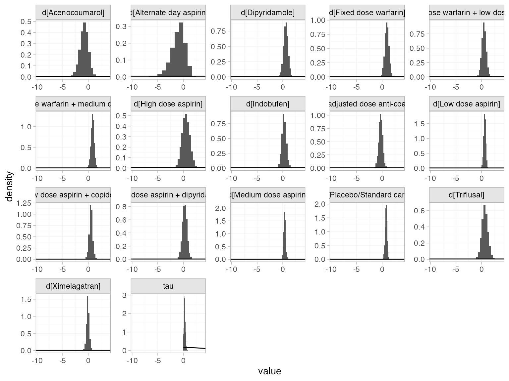
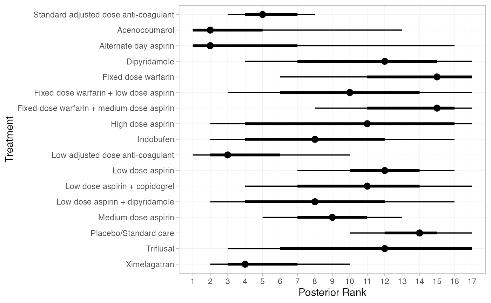

Example: Atrial fibrillation
Source:vignettes/example_atrial_fibrillation.Rmd
example_atrial_fibrillation.Rmd
library(multinma)
options(mc.cores = parallel::detectCores())#> For execution on a local, multicore CPU with excess RAM we recommend calling
#> options(mc.cores = parallel::detectCores())
#>
#> Attaching package: 'multinma'
#> The following objects are masked from 'package:stats':
#>
#> dgamma, pgamma, qgammaThis vignette describes the analysis of 26 trials comparing 17 treatments in 4 classes for the prevention of stroke in patients with atrial fibrillation (Cooper et al. 2009). The data are available in this package as atrial_fibrillation:
head(atrial_fibrillation)
#> studyc studyn trtc trtn trt_class r n E stroke
#> 1 ACTIVE-W 1 Standard adjusted dose anti-coagulant 3 Anti-coagulant 65 3371 4200 0.15
#> 2 ACTIVE-W 1 Low dose aspirin + copidogrel 16 Anti-platelet 106 3335 4180 0.15
#> 3 AFASAK 1 2 Placebo/Standard care 1 Control 19 336 398 0.06
#> 4 AFASAK 1 2 Standard adjusted dose anti-coagulant 3 Anti-coagulant 9 335 413 0.06
#> 5 AFASAK 1 2 Low dose aspirin 5 Anti-platelet 16 336 409 0.06
#> 6 AFASAK 2 3 Standard adjusted dose anti-coagulant 3 Anti-coagulant 11 170 355 0.10
#> year followup
#> 1 2006 1.3
#> 2 2006 1.3
#> 3 1989 1.2
#> 4 1989 1.2
#> 5 1989 1.2
#> 6 1998 2.2Cooper et al. (2009) used this data to demonstrate meta-regression models, which we recreate here.
Setting up the network
Whilst we have data on the patient-years at risk in each study (E), we ignore this here to follow the analysis of Cooper et al. (2009), instead analysing the number of patients with stroke (r) out of the total (n) in each arm. We use the function set_agd_arm() to set up the network, making sure to specify the treatment classes trt_class. We remove the WASPO study from the network as both arms had zero events, and this study therefore contributes no information.
af_net <- set_agd_arm(atrial_fibrillation[atrial_fibrillation$studyc != "WASPO", ],
study = studyc,
trt = trtc,
r = r,
n = n,
trt_class = trt_class)
af_net
#> A network with 25 AgD studies (arm-based).
#>
#> ------------------------------------------------------- AgD studies (arm-based) ----
#> Study Treatments
#> ACTIVE-W 2: Standard adjusted dose anti-coagulant | Low dose aspirin + copidogrel
#> AFASAK 1 3: Placebo/Standard care | Standard adjusted dose anti-coagulant | Low dose aspirin
#> AFASAK 2 4: Standard adjusted dose anti-coagulant | Fixed dose warfarin | Medium dose asp...
#> BAATAF 2: Placebo/Standard care | Low adjusted dose anti-coagulant
#> BAFTA 2: Standard adjusted dose anti-coagulant | Low dose aspirin
#> CAFA 2: Placebo/Standard care | Standard adjusted dose anti-coagulant
#> Chinese ATAFS 2: Standard adjusted dose anti-coagulant | Low dose aspirin
#> EAFT 3: Placebo/Standard care | Standard adjusted dose anti-coagulant | Medium dose a...
#> ESPS 2 4: Placebo/Standard care | Low dose aspirin | Dipyridamole | Low dose aspirin + ...
#> JAST 2: Placebo/Standard care | Low dose aspirin
#> ... plus 15 more studies
#>
#> Outcome type: count
#> ------------------------------------------------------------------------------------
#> Total number of treatments: 17, in 4 classes
#> Total number of studies: 25
#> Reference treatment is: Standard adjusted dose anti-coagulant
#> Network is connected(A better analysis, accounting for differences in the patient-years at risk between studies, can be performed by specifying a rate outcome with r and E in set_agd_arm() above. The following code remains identical.)
Plot the network with the plot() method:
plot(af_net, weight_nodes = TRUE, weight_edges = TRUE, show_trt_class = TRUE) +
ggplot2::theme(legend.position = "bottom", legend.box = "vertical")
Meta-analysis models
We fit two (random effects) models:
- A standard NMA model without any covariates (model 1 of Cooper et al. (2009));
- A meta-regression model adjusting for the proportion of individuals in each study with prior stroke, with shared interaction coefficients by treatment class (model 4b of Cooper et al. (2009)).
NMA with no covariates
We fit a random effects model using the nma() function with trt_effects = "random". We use \(\mathrm{N}(0, 100^2)\) prior distributions for the treatment effects \(d_k\) and study-specific intercepts \(\mu_j\), and a \(\textrm{half-N}(5^2)\) prior for the heterogeneity standard deviation \(\tau\). We can examine the range of parameter values implied by these prior distributions with the summary() method:
summary(normal(scale = 100))
#> A Normal prior distribution: location = 0, scale = 100.
#> 50% of the prior density lies between -67.45 and 67.45.
#> 95% of the prior density lies between -196 and 196.
summary(half_normal(scale = 5))
#> A half-Normal prior distribution: location = 0, scale = 5.
#> 50% of the prior density lies between 0 and 3.37.
#> 95% of the prior density lies between 0 and 9.8.Fitting the model with the nma() function. We increase the target acceptance rate adapt_delta = 0.99 to minimise divergent transition warnings.
af_fit_1 <- nma(af_net,
trt_effects = "random",
prior_intercept = normal(scale = 100),
prior_trt = normal(scale = 100),
prior_het = half_normal(scale = 5),
adapt_delta = 0.99)#> Note: Setting "Standard adjusted dose anti-coagulant" as the network reference treatment.Basic parameter summaries are given by the print() method:
af_fit_1
#> A random effects NMA with a binomial likelihood (logit link).
#> Inference for Stan model: binomial_1par.
#> 4 chains, each with iter=2000; warmup=1000; thin=1;
#> post-warmup draws per chain=1000, total post-warmup draws=4000.
#>
#> mean se_mean sd 2.5% 25% 50%
#> d[Acenocoumarol] -0.80 0.01 0.81 -2.45 -1.31 -0.76
#> d[Alternate day aspirin] -0.95 0.02 1.33 -3.86 -1.70 -0.79
#> d[Dipyridamole] 0.59 0.01 0.47 -0.39 0.29 0.60
#> d[Fixed dose warfarin] 0.94 0.01 0.42 0.10 0.67 0.94
#> d[Fixed dose warfarin + low dose aspirin] 0.47 0.01 0.44 -0.39 0.18 0.47
#> d[Fixed dose warfarin + medium dose aspirin] 0.89 0.01 0.31 0.26 0.69 0.89
#> d[High dose aspirin] 0.50 0.01 0.76 -1.01 0.01 0.52
#> d[Indobufen] 0.25 0.01 0.46 -0.66 -0.05 0.25
#> d[Low adjusted dose anti-coagulant] -0.29 0.01 0.38 -1.06 -0.54 -0.28
#> d[Low dose aspirin] 0.62 0.01 0.22 0.19 0.48 0.62
#> d[Low dose aspirin + copidogrel] 0.52 0.01 0.35 -0.19 0.31 0.52
#> d[Low dose aspirin + dipyridamole] 0.26 0.01 0.49 -0.72 -0.06 0.27
#> d[Medium dose aspirin] 0.38 0.00 0.20 -0.04 0.26 0.39
#> d[Placebo/Standard care] 0.75 0.01 0.20 0.32 0.62 0.76
#> d[Triflusal] 0.62 0.01 0.61 -0.56 0.22 0.61
#> d[Ximelagatran] -0.07 0.00 0.27 -0.61 -0.24 -0.07
#> lp__ -4771.96 0.23 7.31 -4787.70 -4776.76 -4771.66
#> tau 0.28 0.01 0.14 0.04 0.19 0.27
#> 75% 97.5% n_eff Rhat
#> d[Acenocoumarol] -0.25 0.70 3664 1
#> d[Alternate day aspirin] -0.01 1.20 3402 1
#> d[Dipyridamole] 0.90 1.47 2641 1
#> d[Fixed dose warfarin] 1.21 1.76 3347 1
#> d[Fixed dose warfarin + low dose aspirin] 0.76 1.36 2727 1
#> d[Fixed dose warfarin + medium dose aspirin] 1.09 1.51 3234 1
#> d[High dose aspirin] 1.01 1.94 3963 1
#> d[Indobufen] 0.55 1.15 3733 1
#> d[Low adjusted dose anti-coagulant] -0.04 0.44 2848 1
#> d[Low dose aspirin] 0.77 1.05 1856 1
#> d[Low dose aspirin + copidogrel] 0.72 1.21 3388 1
#> d[Low dose aspirin + dipyridamole] 0.60 1.18 2153 1
#> d[Medium dose aspirin] 0.52 0.75 2102 1
#> d[Placebo/Standard care] 0.89 1.14 1327 1
#> d[Triflusal] 1.02 1.87 2916 1
#> d[Ximelagatran] 0.09 0.49 3062 1
#> lp__ -4766.75 -4758.44 1056 1
#> tau 0.37 0.59 696 1
#>
#> Samples were drawn using NUTS(diag_e) at Fri Jan 8 14:39:18 2021.
#> For each parameter, n_eff is a crude measure of effective sample size,
#> and Rhat is the potential scale reduction factor on split chains (at
#> convergence, Rhat=1).By default, summaries of the study-specific intercepts \(\mu_j\) and study-specific relative effects \(\delta_{jk}\) are hidden, but could be examined by changing the pars argument:
The prior and posterior distributions can be compared visually using the plot_prior_posterior() function:
plot_prior_posterior(af_fit_1, prior = c("trt", "het"))
We can compute relative effects against placebo/standard care with the relative_effects() function with the trt_ref argument:
(af_1_releff <- relative_effects(af_fit_1, trt_ref = "Placebo/Standard care"))
#> mean sd 2.5% 25% 50% 75% 97.5% Bulk_ESS
#> d[Standard adjusted dose anti-coagulant] -0.75 0.20 -1.14 -0.89 -0.76 -0.62 -0.32 1355
#> d[Acenocoumarol] -1.55 0.84 -3.25 -2.09 -1.52 -0.99 0.05 3476
#> d[Alternate day aspirin] -1.70 1.32 -4.62 -2.44 -1.54 -0.77 0.41 4515
#> d[Dipyridamole] -0.17 0.44 -1.05 -0.45 -0.16 0.11 0.70 3840
#> d[Fixed dose warfarin] 0.18 0.46 -0.72 -0.11 0.18 0.48 1.09 2995
#> d[Fixed dose warfarin + low dose aspirin] -0.28 0.41 -1.08 -0.54 -0.28 -0.02 0.55 4078
#> d[Fixed dose warfarin + medium dose aspirin] 0.13 0.36 -0.58 -0.11 0.14 0.37 0.85 2809
#> d[High dose aspirin] -0.25 0.75 -1.73 -0.73 -0.24 0.24 1.20 4834
#> d[Indobufen] -0.50 0.50 -1.47 -0.84 -0.51 -0.18 0.47 2674
#> d[Low adjusted dose anti-coagulant] -1.04 0.35 -1.75 -1.27 -1.04 -0.81 -0.36 5200
#> d[Low dose aspirin] -0.13 0.22 -0.55 -0.27 -0.13 0.01 0.30 3917
#> d[Low dose aspirin + copidogrel] -0.24 0.40 -1.03 -0.47 -0.24 0.00 0.57 2421
#> d[Low dose aspirin + dipyridamole] -0.49 0.46 -1.40 -0.80 -0.49 -0.19 0.39 3420
#> d[Medium dose aspirin] -0.37 0.23 -0.84 -0.51 -0.36 -0.22 0.06 2693
#> d[Triflusal] -0.13 0.65 -1.40 -0.57 -0.13 0.28 1.17 2592
#> d[Ximelagatran] -0.82 0.34 -1.48 -1.04 -0.83 -0.61 -0.11 2207
#> Tail_ESS Rhat
#> d[Standard adjusted dose anti-coagulant] 1690 1
#> d[Acenocoumarol] 2451 1
#> d[Alternate day aspirin] 2390 1
#> d[Dipyridamole] 2612 1
#> d[Fixed dose warfarin] 2522 1
#> d[Fixed dose warfarin + low dose aspirin] 2795 1
#> d[Fixed dose warfarin + medium dose aspirin] 2797 1
#> d[High dose aspirin] 3156 1
#> d[Indobufen] 2413 1
#> d[Low adjusted dose anti-coagulant] 3370 1
#> d[Low dose aspirin] 2835 1
#> d[Low dose aspirin + copidogrel] 2274 1
#> d[Low dose aspirin + dipyridamole] 2491 1
#> d[Medium dose aspirin] 2653 1
#> d[Triflusal] 2451 1
#> d[Ximelagatran] 1993 1These estimates can easily be plotted with the plot() method:
plot(af_1_releff, ref_line = 0)
We can also produce treatment rankings, rank probabilities, and cumulative rank probabilities.
(af_1_ranks <- posterior_ranks(af_fit_1))
#> mean sd 2.5% 25% 50% 75% 97.5% Bulk_ESS Tail_ESS
#> rank[Standard adjusted dose anti-coagulant] 5.32 1.46 3.00 4 5 6 8 2196 2590
#> rank[Acenocoumarol] 2.93 2.97 1.00 1 2 3 13 3306 3095
#> rank[Alternate day aspirin] 3.81 4.27 1.00 1 2 5 16 4781 3443
#> rank[Dipyridamole] 11.26 3.92 3.00 8 12 15 17 3479 NA
#> rank[Fixed dose warfarin] 14.12 3.08 6.00 13 15 17 17 3379 NA
#> rank[Fixed dose warfarin + low dose aspirin] 10.09 3.86 3.00 7 10 13 17 3529 3039
#> rank[Fixed dose warfarin + medium dose aspirin] 14.09 2.62 8.00 13 15 16 17 2998 NA
#> rank[High dose aspirin] 10.27 5.24 1.00 6 11 15 17 4303 NA
#> rank[Indobufen] 8.08 3.98 2.00 5 8 11 16 2851 2901
#> rank[Low adjusted dose anti-coagulant] 3.79 2.21 1.00 2 3 5 10 3352 3479
#> rank[Low dose aspirin] 11.77 2.24 7.00 10 12 13 16 3625 3288
#> rank[Low dose aspirin + copidogrel] 10.58 3.38 4.00 8 11 13 17 3043 2621
#> rank[Low dose aspirin + dipyridamole] 8.16 3.99 2.00 5 8 11 16 3300 2781
#> rank[Medium dose aspirin] 9.10 2.17 5.00 8 9 10 14 3639 3071
#> rank[Placebo/Standard care] 13.37 1.86 9.00 12 13 15 17 2680 3229
#> rank[Triflusal] 11.24 4.63 2.98 7 12 16 17 2797 NA
#> rank[Ximelagatran] 4.99 2.39 2.00 3 5 6 11 2650 1879
#> Rhat
#> rank[Standard adjusted dose anti-coagulant] 1
#> rank[Acenocoumarol] 1
#> rank[Alternate day aspirin] 1
#> rank[Dipyridamole] 1
#> rank[Fixed dose warfarin] 1
#> rank[Fixed dose warfarin + low dose aspirin] 1
#> rank[Fixed dose warfarin + medium dose aspirin] 1
#> rank[High dose aspirin] 1
#> rank[Indobufen] 1
#> rank[Low adjusted dose anti-coagulant] 1
#> rank[Low dose aspirin] 1
#> rank[Low dose aspirin + copidogrel] 1
#> rank[Low dose aspirin + dipyridamole] 1
#> rank[Medium dose aspirin] 1
#> rank[Placebo/Standard care] 1
#> rank[Triflusal] 1
#> rank[Ximelagatran] 1
plot(af_1_ranks)
(af_1_rankprobs <- posterior_rank_probs(af_fit_1))
#> p_rank[1] p_rank[2] p_rank[3] p_rank[4] p_rank[5]
#> d[Standard adjusted dose anti-coagulant] 0.00 0.01 0.08 0.20 0.28
#> d[Acenocoumarol] 0.39 0.29 0.10 0.05 0.04
#> d[Alternate day aspirin] 0.45 0.17 0.07 0.05 0.03
#> d[Dipyridamole] 0.00 0.01 0.02 0.03 0.03
#> d[Fixed dose warfarin] 0.00 0.00 0.00 0.00 0.01
#> d[Fixed dose warfarin + low dose aspirin] 0.00 0.01 0.03 0.04 0.05
#> d[Fixed dose warfarin + medium dose aspirin] 0.00 0.00 0.00 0.00 0.00
#> d[High dose aspirin] 0.03 0.06 0.06 0.05 0.05
#> d[Indobufen] 0.01 0.04 0.08 0.09 0.09
#> d[Low adjusted dose anti-coagulant] 0.08 0.23 0.26 0.15 0.09
#> d[Low dose aspirin] 0.00 0.00 0.00 0.00 0.00
#> d[Low dose aspirin + copidogrel] 0.00 0.01 0.02 0.02 0.03
#> d[Low dose aspirin + dipyridamole] 0.01 0.05 0.07 0.08 0.07
#> d[Medium dose aspirin] 0.00 0.00 0.00 0.01 0.03
#> d[Placebo/Standard care] 0.00 0.00 0.00 0.00 0.00
#> d[Triflusal] 0.00 0.02 0.04 0.04 0.04
#> d[Ximelagatran] 0.02 0.09 0.18 0.20 0.16
#> p_rank[6] p_rank[7] p_rank[8] p_rank[9] p_rank[10]
#> d[Standard adjusted dose anti-coagulant] 0.22 0.13 0.05 0.02 0.00
#> d[Acenocoumarol] 0.03 0.03 0.02 0.02 0.01
#> d[Alternate day aspirin] 0.03 0.03 0.02 0.02 0.02
#> d[Dipyridamole] 0.04 0.06 0.07 0.08 0.08
#> d[Fixed dose warfarin] 0.01 0.02 0.03 0.03 0.04
#> d[Fixed dose warfarin + low dose aspirin] 0.06 0.08 0.09 0.09 0.09
#> d[Fixed dose warfarin + medium dose aspirin] 0.01 0.01 0.02 0.03 0.04
#> d[High dose aspirin] 0.05 0.05 0.06 0.06 0.04
#> d[Indobufen] 0.09 0.10 0.09 0.08 0.06
#> d[Low adjusted dose anti-coagulant] 0.07 0.04 0.03 0.02 0.01
#> d[Low dose aspirin] 0.01 0.02 0.04 0.08 0.12
#> d[Low dose aspirin + copidogrel] 0.05 0.07 0.09 0.11 0.11
#> d[Low dose aspirin + dipyridamole] 0.08 0.10 0.09 0.08 0.08
#> d[Medium dose aspirin] 0.07 0.11 0.18 0.19 0.16
#> d[Placebo/Standard care] 0.00 0.00 0.01 0.02 0.04
#> d[Triflusal] 0.05 0.06 0.06 0.06 0.06
#> d[Ximelagatran] 0.13 0.09 0.05 0.03 0.02
#> p_rank[11] p_rank[12] p_rank[13] p_rank[14] p_rank[15]
#> d[Standard adjusted dose anti-coagulant] 0.00 0.00 0.00 0.00 0.00
#> d[Acenocoumarol] 0.01 0.01 0.01 0.01 0.01
#> d[Alternate day aspirin] 0.01 0.01 0.01 0.01 0.01
#> d[Dipyridamole] 0.08 0.07 0.08 0.09 0.09
#> d[Fixed dose warfarin] 0.05 0.06 0.07 0.10 0.13
#> d[Fixed dose warfarin + low dose aspirin] 0.08 0.07 0.07 0.06 0.06
#> d[Fixed dose warfarin + medium dose aspirin] 0.06 0.07 0.09 0.12 0.17
#> d[High dose aspirin] 0.04 0.04 0.04 0.06 0.07
#> d[Indobufen] 0.06 0.05 0.04 0.04 0.04
#> d[Low adjusted dose anti-coagulant] 0.01 0.00 0.00 0.00 0.00
#> d[Low dose aspirin] 0.17 0.17 0.15 0.12 0.07
#> d[Low dose aspirin + copidogrel] 0.11 0.09 0.09 0.07 0.06
#> d[Low dose aspirin + dipyridamole] 0.06 0.06 0.04 0.04 0.03
#> d[Medium dose aspirin] 0.11 0.07 0.04 0.02 0.00
#> d[Placebo/Standard care] 0.09 0.14 0.20 0.21 0.17
#> d[Triflusal] 0.06 0.06 0.05 0.06 0.08
#> d[Ximelagatran] 0.01 0.01 0.00 0.00 0.00
#> p_rank[16] p_rank[17]
#> d[Standard adjusted dose anti-coagulant] 0.00 0.00
#> d[Acenocoumarol] 0.01 0.00
#> d[Alternate day aspirin] 0.02 0.02
#> d[Dipyridamole] 0.09 0.08
#> d[Fixed dose warfarin] 0.20 0.26
#> d[Fixed dose warfarin + low dose aspirin] 0.06 0.04
#> d[Fixed dose warfarin + medium dose aspirin] 0.22 0.16
#> d[High dose aspirin] 0.08 0.16
#> d[Indobufen] 0.03 0.02
#> d[Low adjusted dose anti-coagulant] 0.00 0.00
#> d[Low dose aspirin] 0.03 0.01
#> d[Low dose aspirin + copidogrel] 0.05 0.03
#> d[Low dose aspirin + dipyridamole] 0.03 0.02
#> d[Medium dose aspirin] 0.00 0.00
#> d[Placebo/Standard care] 0.09 0.03
#> d[Triflusal] 0.10 0.16
#> d[Ximelagatran] 0.00 0.00
plot(af_1_rankprobs)
(af_1_cumrankprobs <- posterior_rank_probs(af_fit_1, cumulative = TRUE))
#> p_rank[1] p_rank[2] p_rank[3] p_rank[4] p_rank[5]
#> d[Standard adjusted dose anti-coagulant] 0.00 0.02 0.10 0.29 0.57
#> d[Acenocoumarol] 0.39 0.68 0.77 0.82 0.86
#> d[Alternate day aspirin] 0.45 0.62 0.69 0.74 0.77
#> d[Dipyridamole] 0.00 0.01 0.03 0.06 0.09
#> d[Fixed dose warfarin] 0.00 0.00 0.00 0.01 0.01
#> d[Fixed dose warfarin + low dose aspirin] 0.00 0.01 0.04 0.08 0.13
#> d[Fixed dose warfarin + medium dose aspirin] 0.00 0.00 0.00 0.00 0.00
#> d[High dose aspirin] 0.03 0.09 0.14 0.19 0.24
#> d[Indobufen] 0.01 0.05 0.13 0.21 0.30
#> d[Low adjusted dose anti-coagulant] 0.08 0.31 0.57 0.72 0.82
#> d[Low dose aspirin] 0.00 0.00 0.00 0.00 0.00
#> d[Low dose aspirin + copidogrel] 0.00 0.01 0.02 0.04 0.07
#> d[Low dose aspirin + dipyridamole] 0.01 0.06 0.14 0.22 0.29
#> d[Medium dose aspirin] 0.00 0.00 0.00 0.01 0.04
#> d[Placebo/Standard care] 0.00 0.00 0.00 0.00 0.00
#> d[Triflusal] 0.00 0.03 0.07 0.10 0.15
#> d[Ximelagatran] 0.02 0.11 0.29 0.49 0.65
#> p_rank[6] p_rank[7] p_rank[8] p_rank[9] p_rank[10]
#> d[Standard adjusted dose anti-coagulant] 0.80 0.93 0.98 1.00 1.00
#> d[Acenocoumarol] 0.89 0.91 0.93 0.95 0.96
#> d[Alternate day aspirin] 0.80 0.83 0.86 0.88 0.90
#> d[Dipyridamole] 0.13 0.19 0.26 0.33 0.41
#> d[Fixed dose warfarin] 0.03 0.04 0.07 0.10 0.14
#> d[Fixed dose warfarin + low dose aspirin] 0.19 0.28 0.37 0.46 0.55
#> d[Fixed dose warfarin + medium dose aspirin] 0.01 0.02 0.04 0.07 0.11
#> d[High dose aspirin] 0.29 0.34 0.40 0.46 0.50
#> d[Indobufen] 0.39 0.49 0.58 0.67 0.73
#> d[Low adjusted dose anti-coagulant] 0.88 0.93 0.96 0.97 0.98
#> d[Low dose aspirin] 0.01 0.03 0.08 0.15 0.28
#> d[Low dose aspirin + copidogrel] 0.12 0.19 0.28 0.38 0.49
#> d[Low dose aspirin + dipyridamole] 0.37 0.47 0.56 0.64 0.72
#> d[Medium dose aspirin] 0.11 0.22 0.40 0.59 0.76
#> d[Placebo/Standard care] 0.00 0.00 0.01 0.03 0.07
#> d[Triflusal] 0.19 0.25 0.31 0.37 0.43
#> d[Ximelagatran] 0.78 0.87 0.92 0.95 0.97
#> p_rank[11] p_rank[12] p_rank[13] p_rank[14] p_rank[15]
#> d[Standard adjusted dose anti-coagulant] 1.00 1.00 1.00 1.00 1.00
#> d[Acenocoumarol] 0.97 0.97 0.98 0.99 0.99
#> d[Alternate day aspirin] 0.91 0.92 0.94 0.95 0.96
#> d[Dipyridamole] 0.50 0.57 0.65 0.74 0.83
#> d[Fixed dose warfarin] 0.19 0.25 0.32 0.42 0.54
#> d[Fixed dose warfarin + low dose aspirin] 0.63 0.71 0.78 0.84 0.90
#> d[Fixed dose warfarin + medium dose aspirin] 0.17 0.24 0.33 0.45 0.62
#> d[High dose aspirin] 0.54 0.58 0.63 0.69 0.76
#> d[Indobufen] 0.78 0.84 0.88 0.91 0.95
#> d[Low adjusted dose anti-coagulant] 0.99 1.00 1.00 1.00 1.00
#> d[Low dose aspirin] 0.45 0.62 0.77 0.89 0.96
#> d[Low dose aspirin + copidogrel] 0.60 0.69 0.78 0.86 0.92
#> d[Low dose aspirin + dipyridamole] 0.78 0.84 0.88 0.92 0.95
#> d[Medium dose aspirin] 0.86 0.94 0.97 0.99 1.00
#> d[Placebo/Standard care] 0.16 0.30 0.50 0.71 0.88
#> d[Triflusal] 0.49 0.54 0.60 0.66 0.73
#> d[Ximelagatran] 0.98 0.99 0.99 1.00 1.00
#> p_rank[16] p_rank[17]
#> d[Standard adjusted dose anti-coagulant] 1.00 1
#> d[Acenocoumarol] 1.00 1
#> d[Alternate day aspirin] 0.98 1
#> d[Dipyridamole] 0.92 1
#> d[Fixed dose warfarin] 0.74 1
#> d[Fixed dose warfarin + low dose aspirin] 0.96 1
#> d[Fixed dose warfarin + medium dose aspirin] 0.84 1
#> d[High dose aspirin] 0.84 1
#> d[Indobufen] 0.98 1
#> d[Low adjusted dose anti-coagulant] 1.00 1
#> d[Low dose aspirin] 0.99 1
#> d[Low dose aspirin + copidogrel] 0.97 1
#> d[Low dose aspirin + dipyridamole] 0.98 1
#> d[Medium dose aspirin] 1.00 1
#> d[Placebo/Standard care] 0.97 1
#> d[Triflusal] 0.84 1
#> d[Ximelagatran] 1.00 1
plot(af_1_cumrankprobs)Network meta-regression adjusting for proportion of prior stroke
We now consider a meta-regression model adjusting for the proportion of individuals in each study with prior stroke, with shared interaction coefficients by treatment class. The regression model is specified in the nma() function using a formula in the regression argument. The formula ~ .trt:stroke means that interactions of prior stroke with treatment will be included; the .trt special variable indicates treatment, and stroke is in the original data set. We specify class_interactions = "common" to denote that the interaction parameters are to be common (i.e. shared) between treatments within each class. (Setting class_interactions = "independent" would fit model 2 of Cooper et al. (2009) with separate interactions for each treatment, data permitting.) We use the same prior distributions as above, but additionally require a prior distribution for the regression coefficients prior_reg; we use a \(\mathrm{N}(0, 100^2)\) prior distribution. The QR decomposition can greatly improve the efficiency of sampling for regression models by decorrelating the sampling space; we specify that this should be used with QR = TRUE, and increase the target acceptance rate adapt_delta = 0.99 to minimise divergent transition warnings.
af_fit_4b <- nma(af_net,
trt_effects = "random",
regression = ~ .trt:stroke,
class_interactions = "common",
QR = TRUE,
prior_intercept = normal(scale = 100),
prior_trt = normal(scale = 100),
prior_reg = normal(scale = 100),
prior_het = half_normal(scale = 5),
adapt_delta = 0.99)#> Note: Setting "Standard adjusted dose anti-coagulant" as the network reference treatment.Basic parameter summaries are given by the print() method:
af_fit_4b
#> A random effects NMA with a binomial likelihood (logit link).
#> Regression model: ~.trt:stroke.
#> Centred covariates at the following overall mean values:
#> stroke
#> 0.2957377
#> Inference for Stan model: binomial_1par.
#> 4 chains, each with iter=2000; warmup=1000; thin=1;
#> post-warmup draws per chain=1000, total post-warmup draws=4000.
#>
#> mean se_mean sd 2.5% 25% 50%
#> beta[.trtclassMixed:stroke] 3.94 0.03 2.14 -0.12 2.52 3.90
#> beta[.trtclassAnti-platelet:stroke] 0.94 0.01 0.40 0.13 0.69 0.93
#> beta[.trtclassControl:stroke] 0.70 0.01 0.43 -0.14 0.41 0.68
#> d[Acenocoumarol] 0.36 0.02 1.05 -1.75 -0.29 0.40
#> d[Alternate day aspirin] -0.91 0.03 1.39 -4.24 -1.65 -0.74
#> d[Dipyridamole] 0.58 0.01 0.41 -0.21 0.32 0.57
#> d[Fixed dose warfarin] 0.64 0.01 0.40 -0.15 0.38 0.64
#> d[Fixed dose warfarin + low dose aspirin] 1.47 0.01 0.76 0.03 0.97 1.47
#> d[Fixed dose warfarin + medium dose aspirin] 1.00 0.00 0.30 0.41 0.81 1.00
#> d[High dose aspirin] 0.43 0.01 0.75 -1.06 -0.06 0.43
#> d[Indobufen] -0.41 0.01 0.49 -1.36 -0.73 -0.41
#> d[Low adjusted dose anti-coagulant] -0.42 0.01 0.37 -1.20 -0.65 -0.41
#> d[Low dose aspirin] 0.72 0.00 0.20 0.34 0.59 0.72
#> d[Low dose aspirin + copidogrel] 0.65 0.01 0.28 0.08 0.48 0.65
#> d[Low dose aspirin + dipyridamole] 0.25 0.01 0.44 -0.62 -0.02 0.26
#> d[Medium dose aspirin] 0.35 0.00 0.17 0.01 0.24 0.35
#> d[Placebo/Standard care] 0.80 0.00 0.19 0.41 0.67 0.80
#> d[Triflusal] 0.92 0.01 0.58 -0.17 0.54 0.91
#> d[Ximelagatran] -0.09 0.00 0.22 -0.53 -0.22 -0.09
#> lp__ -4771.39 0.20 6.89 -4785.30 -4775.90 -4771.24
#> tau 0.19 0.01 0.13 0.01 0.09 0.17
#> 75% 97.5% n_eff Rhat
#> beta[.trtclassMixed:stroke] 5.29 8.34 4575 1
#> beta[.trtclassAnti-platelet:stroke] 1.19 1.76 4388 1
#> beta[.trtclassControl:stroke] 0.98 1.58 4346 1
#> d[Acenocoumarol] 1.05 2.42 3160 1
#> d[Alternate day aspirin] 0.05 1.29 2064 1
#> d[Dipyridamole] 0.84 1.39 5156 1
#> d[Fixed dose warfarin] 0.91 1.42 5137 1
#> d[Fixed dose warfarin + low dose aspirin] 1.97 2.96 4613 1
#> d[Fixed dose warfarin + medium dose aspirin] 1.19 1.61 4329 1
#> d[High dose aspirin] 0.93 1.85 5442 1
#> d[Indobufen] -0.09 0.55 4136 1
#> d[Low adjusted dose anti-coagulant] -0.18 0.27 4362 1
#> d[Low dose aspirin] 0.85 1.10 4140 1
#> d[Low dose aspirin + copidogrel] 0.81 1.21 2129 1
#> d[Low dose aspirin + dipyridamole] 0.53 1.11 5010 1
#> d[Medium dose aspirin] 0.46 0.68 4333 1
#> d[Placebo/Standard care] 0.92 1.19 4006 1
#> d[Triflusal] 1.30 2.09 5312 1
#> d[Ximelagatran] 0.05 0.32 3090 1
#> lp__ -4766.54 -4758.75 1248 1
#> tau 0.26 0.47 455 1
#>
#> Samples were drawn using NUTS(diag_e) at Fri Jan 8 14:39:51 2021.
#> For each parameter, n_eff is a crude measure of effective sample size,
#> and Rhat is the potential scale reduction factor on split chains (at
#> convergence, Rhat=1).The estimated treatment effects d[] shown here correspond to relative effects at the reference level of the covariate, here proportion of prior stroke centered at the network mean value 0.296.
By default, summaries of the study-specific intercepts \(\mu_j\) and study-specific relative effects \(\delta_{jk}\) are hidden, but could be examined by changing the pars argument:
The prior and posterior distributions can be compared visually using the plot_prior_posterior() function:
plot_prior_posterior(af_fit_4b, prior = c("reg", "het"))
We can compute relative effects against placebo/standard care with the relative_effects() function with the trt_ref argument, which by default produces relative effects for the observed proportions of prior stroke in each study:
# Not run
(af_4b_releff <- relative_effects(af_fit_4b, trt_ref = "Placebo/Standard care"))
plot(af_4b_releff, ref_line = 0)We can produce estimated treatment effects for particular covariate values using the newdata argument. For example, treatment effects when no individuals or all individuals have prior stroke are produced by
(af_4b_releff_01 <- relative_effects(af_fit_4b,
trt_ref = "Placebo/Standard care",
newdata = data.frame(stroke = c(0, 1),
label = c("stroke = 0", "stroke = 1")),
study = label))
#> ------------------------------------------------------------- Study: stroke = 0 ----
#>
#> Covariate values:
#> stroke
#> 0
#>
#> mean sd 2.5% 25% 50% 75% 97.5%
#> d[stroke = 0: Standard adjusted dose anti-coagulant] -0.59 0.24 -1.06 -0.75 -0.59 -0.44 -0.10
#> d[stroke = 0: Acenocoumarol] -1.40 0.86 -3.14 -1.95 -1.36 -0.82 0.16
#> d[stroke = 0: Alternate day aspirin] -1.78 1.38 -5.04 -2.50 -1.59 -0.83 0.37
#> d[stroke = 0: Dipyridamole] -0.29 0.44 -1.13 -0.58 -0.28 -0.01 0.60
#> d[stroke = 0: Fixed dose warfarin] 0.05 0.46 -0.88 -0.24 0.05 0.35 0.96
#> d[stroke = 0: Fixed dose warfarin + low dose aspirin] -0.28 0.34 -0.94 -0.50 -0.29 -0.08 0.40
#> d[stroke = 0: Fixed dose warfarin + medium dose aspirin] -0.76 0.66 -2.09 -1.19 -0.74 -0.33 0.55
#> d[stroke = 0: High dose aspirin] -0.44 0.77 -2.02 -0.95 -0.43 0.07 1.01
#> d[stroke = 0: Indobufen] -1.28 0.57 -2.42 -1.66 -1.28 -0.92 -0.12
#> d[stroke = 0: Low adjusted dose anti-coagulant] -1.01 0.33 -1.68 -1.24 -1.00 -0.79 -0.37
#> d[stroke = 0: Low dose aspirin] -0.15 0.22 -0.58 -0.30 -0.15 0.00 0.29
#> d[stroke = 0: Low dose aspirin + copidogrel] -0.22 0.36 -0.92 -0.44 -0.23 0.00 0.51
#> d[stroke = 0: Low dose aspirin + dipyridamole] -0.62 0.47 -1.56 -0.92 -0.61 -0.31 0.32
#> d[stroke = 0: Medium dose aspirin] -0.52 0.26 -1.05 -0.69 -0.52 -0.35 -0.01
#> d[stroke = 0: Triflusal] 0.05 0.63 -1.13 -0.37 0.04 0.47 1.32
#> d[stroke = 0: Ximelagatran] -0.68 0.32 -1.31 -0.89 -0.69 -0.48 -0.04
#> Bulk_ESS Tail_ESS Rhat
#> d[stroke = 0: Standard adjusted dose anti-coagulant] 3731 2761 1
#> d[stroke = 0: Acenocoumarol] 3944 2239 1
#> d[stroke = 0: Alternate day aspirin] 2907 1657 1
#> d[stroke = 0: Dipyridamole] 4976 2964 1
#> d[stroke = 0: Fixed dose warfarin] 5272 2713 1
#> d[stroke = 0: Fixed dose warfarin + low dose aspirin] 4602 2231 1
#> d[stroke = 0: Fixed dose warfarin + medium dose aspirin] 4448 2891 1
#> d[stroke = 0: High dose aspirin] 5838 3168 1
#> d[stroke = 0: Indobufen] 4057 2750 1
#> d[stroke = 0: Low adjusted dose anti-coagulant] 5805 3309 1
#> d[stroke = 0: Low dose aspirin] 4592 3151 1
#> d[stroke = 0: Low dose aspirin + copidogrel] 2876 2303 1
#> d[stroke = 0: Low dose aspirin + dipyridamole] 4497 2453 1
#> d[stroke = 0: Medium dose aspirin] 4307 2974 1
#> d[stroke = 0: Triflusal] 5213 3057 1
#> d[stroke = 0: Ximelagatran] 3856 2662 1
#>
#> ------------------------------------------------------------- Study: stroke = 1 ----
#>
#> Covariate values:
#> stroke
#> 1
#>
#> mean sd 2.5% 25% 50% 75% 97.5%
#> d[stroke = 1: Standard adjusted dose anti-coagulant] -1.29 0.34 -1.97 -1.51 -1.28 -1.06 -0.63
#> d[stroke = 1: Acenocoumarol] 1.85 2.35 -2.65 0.28 1.81 3.41 6.66
#> d[stroke = 1: Alternate day aspirin] -1.54 1.41 -4.89 -2.31 -1.37 -0.55 0.66
#> d[stroke = 1: Dipyridamole] -0.05 0.39 -0.81 -0.30 -0.05 0.21 0.69
#> d[stroke = 1: Fixed dose warfarin] -0.65 0.53 -1.71 -1.00 -0.64 -0.31 0.42
#> d[stroke = 1: Fixed dose warfarin + low dose aspirin] 2.96 2.21 -1.25 1.50 2.92 4.40 7.50
#> d[stroke = 1: Fixed dose warfarin + medium dose aspirin] 2.49 1.65 -0.76 1.40 2.46 3.54 5.81
#> d[stroke = 1: High dose aspirin] -0.20 0.73 -1.69 -0.67 -0.21 0.29 1.21
#> d[stroke = 1: Indobufen] -1.04 0.53 -2.08 -1.38 -1.04 -0.70 -0.02
#> d[stroke = 1: Low adjusted dose anti-coagulant] -1.71 0.50 -2.73 -2.03 -1.70 -1.38 -0.74
#> d[stroke = 1: Low dose aspirin] 0.09 0.29 -0.48 -0.09 0.09 0.29 0.63
#> d[stroke = 1: Low dose aspirin + copidogrel] 0.02 0.39 -0.76 -0.22 0.03 0.27 0.75
#> d[stroke = 1: Low dose aspirin + dipyridamole] -0.37 0.41 -1.21 -0.63 -0.36 -0.10 0.42
#> d[stroke = 1: Medium dose aspirin] -0.28 0.24 -0.78 -0.43 -0.27 -0.13 0.19
#> d[stroke = 1: Triflusal] 0.29 0.65 -0.96 -0.14 0.29 0.71 1.59
#> d[stroke = 1: Ximelagatran] -1.38 0.41 -2.19 -1.64 -1.37 -1.12 -0.59
#> Bulk_ESS Tail_ESS Rhat
#> d[stroke = 1: Standard adjusted dose anti-coagulant] 5096 2688 1
#> d[stroke = 1: Acenocoumarol] 3838 2633 1
#> d[stroke = 1: Alternate day aspirin] 2950 1678 1
#> d[stroke = 1: Dipyridamole] 5404 3167 1
#> d[stroke = 1: Fixed dose warfarin] 5256 2675 1
#> d[stroke = 1: Fixed dose warfarin + low dose aspirin] 4569 3066 1
#> d[stroke = 1: Fixed dose warfarin + medium dose aspirin] 4639 2997 1
#> d[stroke = 1: High dose aspirin] 5677 2789 1
#> d[stroke = 1: Indobufen] 4699 2807 1
#> d[stroke = 1: Low adjusted dose anti-coagulant] 4797 2868 1
#> d[stroke = 1: Low dose aspirin] 4376 2680 1
#> d[stroke = 1: Low dose aspirin + copidogrel] 3289 1922 1
#> d[stroke = 1: Low dose aspirin + dipyridamole] 5673 2423 1
#> d[stroke = 1: Medium dose aspirin] 4543 2926 1
#> d[stroke = 1: Triflusal] 5238 3009 1
#> d[stroke = 1: Ximelagatran] 4265 2590 1
plot(af_4b_releff_01, ref_line = 0)
The estimated class interactions (against the reference “Mixed†class) are very uncertain.
plot(af_fit_4b, pars = "beta", stat = "halfeye", ref_line = 0)
The interactions are more straightforward to interpret if we transform the interaction coefficients (using the consistency equations) so that they are against the control class:
af_4b_beta <- as.array(af_fit_4b, pars = "beta")
# Subtract beta[Control:stroke] from the other class interactions
af_4b_beta[ , , 1:2] <- sweep(af_4b_beta[ , , 1:2], 1:2,
af_4b_beta[ , , "beta[.trtclassControl:stroke]"], FUN = "-")
# Set beta[Anti-coagulant:stroke] = -beta[Control:stroke]
af_4b_beta[ , , "beta[.trtclassControl:stroke]"] <- -af_4b_beta[ , , "beta[.trtclassControl:stroke]"]
names(af_4b_beta)[3] <- "beta[.trtclassAnti-coagulant:stroke]"
# Summarise
summary(af_4b_beta)
#> mean sd 2.5% 25% 50% 75% 97.5% Bulk_ESS Tail_ESS
#> beta[.trtclassMixed:stroke] 3.25 2.17 -0.89 1.80 3.24 4.61 7.68 4600 3036
#> beta[.trtclassAnti-platelet:stroke] 0.24 0.33 -0.44 0.04 0.25 0.47 0.88 4069 3248
#> beta[.trtclassAnti-coagulant:stroke] -0.70 0.43 -1.58 -0.98 -0.68 -0.41 0.14 4454 2652
#> Rhat
#> beta[.trtclassMixed:stroke] 1
#> beta[.trtclassAnti-platelet:stroke] 1
#> beta[.trtclassAnti-coagulant:stroke] 1
plot(summary(af_4b_beta), stat = "halfeye", ref_line = 0)
There is some evidence that the effect of anti-coagulants increases (compared to control) with prior stroke. There is little evidence the effect of anti-platelets reduces with prior stroke, although the point estimate represents a substantial reduction in effectiveness, and the 95% Credible Interval includes values that correspond to substantial increases in treatment effect. The interaction effect of stroke on mixed treatments is very uncertain, but potentially indicates a substantial reduction in treatment effects with prior stroke.
We can also produce treatment rankings, rank probabilities, and cumulative rank probabilities. By default (without the newdata argument specified), these are produced at the value of stroke for each study in the network in turn. To instead produce rankings for when no individuals or all individuals have prior stroke, we specify the newdata argument.
(af_4b_ranks <- posterior_ranks(af_fit_4b,
newdata = data.frame(stroke = c(0, 1),
label = c("stroke = 0", "stroke = 1")),
study = label))
#> ------------------------------------------------------------- Study: stroke = 0 ----
#>
#> Covariate values:
#> stroke
#> 0
#>
#> mean sd 2.5% 25% 50% 75% 97.5%
#> rank[stroke = 0: Standard adjusted dose anti-coagulant] 7.76 1.87 4 6.75 8 9 12
#> rank[stroke = 0: Acenocoumarol] 4.01 3.68 1 1.00 3 5 15
#> rank[stroke = 0: Alternate day aspirin] 3.99 4.41 1 1.00 2 5 16
#> rank[stroke = 0: Dipyridamole] 11.11 3.66 4 8.00 11 14 17
#> rank[stroke = 0: Fixed dose warfarin] 14.07 2.98 7 12.00 15 16 17
#> rank[stroke = 0: Fixed dose warfarin + low dose aspirin] 11.08 3.68 4 8.00 11 14 17
#> rank[stroke = 0: Fixed dose warfarin + medium dose aspirin] 7.16 4.53 1 3.00 6 11 16
#> rank[stroke = 0: High dose aspirin] 9.61 5.29 1 5.00 10 15 17
#> rank[stroke = 0: Indobufen] 3.62 2.73 1 2.00 3 4 12
#> rank[stroke = 0: Low adjusted dose anti-coagulant] 4.55 2.40 1 3.00 4 6 11
#> rank[stroke = 0: Low dose aspirin] 12.89 1.91 9 12.00 13 14 16
#> rank[stroke = 0: Low dose aspirin + copidogrel] 12.01 2.95 5 10.00 12 14 17
#> rank[stroke = 0: Low dose aspirin + dipyridamole] 7.89 3.74 2 5.00 8 10 16
#> rank[stroke = 0: Medium dose aspirin] 8.60 2.16 5 7.00 9 10 13
#> rank[stroke = 0: Placebo/Standard care] 14.33 1.91 10 13.00 15 16 17
#> rank[stroke = 0: Triflusal] 13.41 3.99 4 11.00 15 17 17
#> rank[stroke = 0: Ximelagatran] 6.90 2.65 3 5.00 7 9 13
#> Bulk_ESS Tail_ESS Rhat
#> rank[stroke = 0: Standard adjusted dose anti-coagulant] 3714 2785 1
#> rank[stroke = 0: Acenocoumarol] 4088 3183 1
#> rank[stroke = 0: Alternate day aspirin] 4643 3321 1
#> rank[stroke = 0: Dipyridamole] 5152 NA 1
#> rank[stroke = 0: Fixed dose warfarin] 4738 NA 1
#> rank[stroke = 0: Fixed dose warfarin + low dose aspirin] 4536 NA 1
#> rank[stroke = 0: Fixed dose warfarin + medium dose aspirin] 4327 3084 1
#> rank[stroke = 0: High dose aspirin] 5789 NA 1
#> rank[stroke = 0: Indobufen] 3759 2956 1
#> rank[stroke = 0: Low adjusted dose anti-coagulant] 4945 3575 1
#> rank[stroke = 0: Low dose aspirin] 3743 3077 1
#> rank[stroke = 0: Low dose aspirin + copidogrel] 2673 2149 1
#> rank[stroke = 0: Low dose aspirin + dipyridamole] 4510 3095 1
#> rank[stroke = 0: Medium dose aspirin] 4515 3421 1
#> rank[stroke = 0: Placebo/Standard care] 3432 NA 1
#> rank[stroke = 0: Triflusal] 4714 NA 1
#> rank[stroke = 0: Ximelagatran] 3749 3080 1
#>
#> ------------------------------------------------------------- Study: stroke = 1 ----
#>
#> Covariate values:
#> stroke
#> 1
#>
#> mean sd 2.5% 25% 50% 75% 97.5%
#> rank[stroke = 1: Standard adjusted dose anti-coagulant] 3.66 1.11 2 3 4 4 6
#> rank[stroke = 1: Acenocoumarol] 13.19 4.39 1 14 15 16 17
#> rank[stroke = 1: Alternate day aspirin] 4.48 3.99 1 1 3 7 14
#> rank[stroke = 1: Dipyridamole] 10.60 2.65 6 9 11 13 15
#> rank[stroke = 1: Fixed dose warfarin] 7.05 2.80 3 5 6 8 14
#> rank[stroke = 1: Fixed dose warfarin + low dose aspirin] 15.78 2.94 5 16 17 17 17
#> rank[stroke = 1: Fixed dose warfarin + medium dose aspirin] 15.40 1.99 8 15 16 16 17
#> rank[stroke = 1: High dose aspirin] 9.45 3.98 2 6 9 13 16
#> rank[stroke = 1: Indobufen] 4.97 2.18 1 4 5 6 10
#> rank[stroke = 1: Low adjusted dose anti-coagulant] 2.03 1.28 1 1 2 2 5
#> rank[stroke = 1: Low dose aspirin] 11.88 1.79 8 11 12 13 15
#> rank[stroke = 1: Low dose aspirin + copidogrel] 11.17 2.45 6 10 11 13 15
#> rank[stroke = 1: Low dose aspirin + dipyridamole] 8.26 2.67 4 6 8 10 14
#> rank[stroke = 1: Medium dose aspirin] 8.61 1.70 6 7 8 10 12
#> rank[stroke = 1: Placebo/Standard care] 11.16 1.95 7 10 11 12 15
#> rank[stroke = 1: Triflusal] 12.17 3.03 5 10 13 14 17
#> rank[stroke = 1: Ximelagatran] 3.14 1.38 1 2 3 4 6
#> Bulk_ESS Tail_ESS Rhat
#> rank[stroke = 1: Standard adjusted dose anti-coagulant] 3329 2999 1
#> rank[stroke = 1: Acenocoumarol] 3870 NA 1
#> rank[stroke = 1: Alternate day aspirin] 4621 3314 1
#> rank[stroke = 1: Dipyridamole] 4638 2892 1
#> rank[stroke = 1: Fixed dose warfarin] 4206 3163 1
#> rank[stroke = 1: Fixed dose warfarin + low dose aspirin] 3359 NA 1
#> rank[stroke = 1: Fixed dose warfarin + medium dose aspirin] 3252 NA 1
#> rank[stroke = 1: High dose aspirin] 4771 3173 1
#> rank[stroke = 1: Indobufen] 4036 2756 1
#> rank[stroke = 1: Low adjusted dose anti-coagulant] 3003 3301 1
#> rank[stroke = 1: Low dose aspirin] 3668 2996 1
#> rank[stroke = 1: Low dose aspirin + copidogrel] 3040 2184 1
#> rank[stroke = 1: Low dose aspirin + dipyridamole] 4822 3177 1
#> rank[stroke = 1: Medium dose aspirin] 3911 3086 1
#> rank[stroke = 1: Placebo/Standard care] 4516 3128 1
#> rank[stroke = 1: Triflusal] 4459 NA 1
#> rank[stroke = 1: Ximelagatran] 3201 2786 1
plot(af_4b_ranks)
(af_4b_rankprobs <- posterior_rank_probs(af_fit_4b,
newdata = data.frame(stroke = c(0, 1),
label = c("stroke = 0", "stroke = 1")),
study = label))
#> ------------------------------------------------------------- Study: stroke = 0 ----
#>
#> Covariate values:
#> stroke
#> 0
#>
#> p_rank[1] p_rank[2] p_rank[3] p_rank[4]
#> d[stroke = 0: Standard adjusted dose anti-coagulant] 0.00 0.00 0.01 0.02
#> d[stroke = 0: Acenocoumarol] 0.26 0.23 0.12 0.10
#> d[stroke = 0: Alternate day aspirin] 0.45 0.14 0.08 0.05
#> d[stroke = 0: Dipyridamole] 0.00 0.00 0.01 0.03
#> d[stroke = 0: Fixed dose warfarin] 0.00 0.00 0.00 0.01
#> d[stroke = 0: Fixed dose warfarin + low dose aspirin] 0.00 0.00 0.01 0.03
#> d[stroke = 0: Fixed dose warfarin + medium dose aspirin] 0.05 0.09 0.12 0.11
#> d[stroke = 0: High dose aspirin] 0.03 0.06 0.07 0.07
#> d[stroke = 0: Indobufen] 0.15 0.28 0.21 0.12
#> d[stroke = 0: Low adjusted dose anti-coagulant] 0.04 0.12 0.22 0.21
#> d[stroke = 0: Low dose aspirin] 0.00 0.00 0.00 0.00
#> d[stroke = 0: Low dose aspirin + copidogrel] 0.00 0.00 0.00 0.01
#> d[stroke = 0: Low dose aspirin + dipyridamole] 0.01 0.03 0.07 0.09
#> d[stroke = 0: Medium dose aspirin] 0.00 0.00 0.01 0.01
#> d[stroke = 0: Placebo/Standard care] 0.00 0.00 0.00 0.00
#> d[stroke = 0: Triflusal] 0.00 0.00 0.01 0.02
#> d[stroke = 0: Ximelagatran] 0.00 0.02 0.05 0.11
#> p_rank[5] p_rank[6] p_rank[7] p_rank[8]
#> d[stroke = 0: Standard adjusted dose anti-coagulant] 0.08 0.14 0.21 0.20
#> d[stroke = 0: Acenocoumarol] 0.06 0.04 0.03 0.02
#> d[stroke = 0: Alternate day aspirin] 0.04 0.03 0.03 0.02
#> d[stroke = 0: Dipyridamole] 0.04 0.05 0.06 0.06
#> d[stroke = 0: Fixed dose warfarin] 0.01 0.01 0.01 0.02
#> d[stroke = 0: Fixed dose warfarin + low dose aspirin] 0.04 0.05 0.05 0.06
#> d[stroke = 0: Fixed dose warfarin + medium dose aspirin] 0.09 0.07 0.05 0.05
#> d[stroke = 0: High dose aspirin] 0.07 0.05 0.04 0.04
#> d[stroke = 0: Indobufen] 0.07 0.05 0.02 0.03
#> d[stroke = 0: Low adjusted dose anti-coagulant] 0.14 0.09 0.06 0.04
#> d[stroke = 0: Low dose aspirin] 0.00 0.00 0.00 0.01
#> d[stroke = 0: Low dose aspirin + copidogrel] 0.01 0.02 0.03 0.04
#> d[stroke = 0: Low dose aspirin + dipyridamole] 0.11 0.11 0.08 0.09
#> d[stroke = 0: Medium dose aspirin] 0.05 0.10 0.14 0.18
#> d[stroke = 0: Placebo/Standard care] 0.00 0.00 0.00 0.00
#> d[stroke = 0: Triflusal] 0.03 0.03 0.03 0.03
#> d[stroke = 0: Ximelagatran] 0.15 0.16 0.14 0.11
#> p_rank[9] p_rank[10] p_rank[11] p_rank[12]
#> d[stroke = 0: Standard adjusted dose anti-coagulant] 0.16 0.10 0.05 0.02
#> d[stroke = 0: Acenocoumarol] 0.02 0.02 0.02 0.01
#> d[stroke = 0: Alternate day aspirin] 0.02 0.02 0.02 0.01
#> d[stroke = 0: Dipyridamole] 0.07 0.09 0.10 0.10
#> d[stroke = 0: Fixed dose warfarin] 0.03 0.04 0.06 0.07
#> d[stroke = 0: Fixed dose warfarin + low dose aspirin] 0.07 0.09 0.09 0.10
#> d[stroke = 0: Fixed dose warfarin + medium dose aspirin] 0.05 0.05 0.05 0.04
#> d[stroke = 0: High dose aspirin] 0.04 0.05 0.05 0.04
#> d[stroke = 0: Indobufen] 0.02 0.01 0.01 0.01
#> d[stroke = 0: Low adjusted dose anti-coagulant] 0.03 0.02 0.01 0.01
#> d[stroke = 0: Low dose aspirin] 0.03 0.06 0.11 0.17
#> d[stroke = 0: Low dose aspirin + copidogrel] 0.06 0.09 0.12 0.15
#> d[stroke = 0: Low dose aspirin + dipyridamole] 0.09 0.08 0.06 0.05
#> d[stroke = 0: Medium dose aspirin] 0.18 0.15 0.10 0.06
#> d[stroke = 0: Placebo/Standard care] 0.01 0.02 0.05 0.08
#> d[stroke = 0: Triflusal] 0.04 0.04 0.05 0.06
#> d[stroke = 0: Ximelagatran] 0.08 0.07 0.05 0.03
#> p_rank[13] p_rank[14] p_rank[15]
#> d[stroke = 0: Standard adjusted dose anti-coagulant] 0.01 0.00 0.00
#> d[stroke = 0: Acenocoumarol] 0.01 0.01 0.01
#> d[stroke = 0: Alternate day aspirin] 0.02 0.02 0.02
#> d[stroke = 0: Dipyridamole] 0.09 0.08 0.09
#> d[stroke = 0: Fixed dose warfarin] 0.08 0.09 0.13
#> d[stroke = 0: Fixed dose warfarin + low dose aspirin] 0.09 0.09 0.08
#> d[stroke = 0: Fixed dose warfarin + medium dose aspirin] 0.04 0.04 0.04
#> d[stroke = 0: High dose aspirin] 0.05 0.05 0.05
#> d[stroke = 0: Indobufen] 0.01 0.00 0.00
#> d[stroke = 0: Low adjusted dose anti-coagulant] 0.00 0.00 0.00
#> d[stroke = 0: Low dose aspirin] 0.21 0.19 0.13
#> d[stroke = 0: Low dose aspirin + copidogrel] 0.13 0.11 0.10
#> d[stroke = 0: Low dose aspirin + dipyridamole] 0.04 0.03 0.03
#> d[stroke = 0: Medium dose aspirin] 0.03 0.01 0.00
#> d[stroke = 0: Placebo/Standard care] 0.12 0.19 0.22
#> d[stroke = 0: Triflusal] 0.06 0.07 0.08
#> d[stroke = 0: Ximelagatran] 0.02 0.01 0.00
#> p_rank[16] p_rank[17]
#> d[stroke = 0: Standard adjusted dose anti-coagulant] 0.00 0.00
#> d[stroke = 0: Acenocoumarol] 0.01 0.00
#> d[stroke = 0: Alternate day aspirin] 0.02 0.02
#> d[stroke = 0: Dipyridamole] 0.07 0.06
#> d[stroke = 0: Fixed dose warfarin] 0.21 0.23
#> d[stroke = 0: Fixed dose warfarin + low dose aspirin] 0.08 0.05
#> d[stroke = 0: Fixed dose warfarin + medium dose aspirin] 0.03 0.02
#> d[stroke = 0: High dose aspirin] 0.08 0.13
#> d[stroke = 0: Indobufen] 0.00 0.00
#> d[stroke = 0: Low adjusted dose anti-coagulant] 0.00 0.00
#> d[stroke = 0: Low dose aspirin] 0.06 0.01
#> d[stroke = 0: Low dose aspirin + copidogrel] 0.08 0.04
#> d[stroke = 0: Low dose aspirin + dipyridamole] 0.02 0.01
#> d[stroke = 0: Medium dose aspirin] 0.00 0.00
#> d[stroke = 0: Placebo/Standard care] 0.19 0.11
#> d[stroke = 0: Triflusal] 0.14 0.32
#> d[stroke = 0: Ximelagatran] 0.00 0.00
#>
#> ------------------------------------------------------------- Study: stroke = 1 ----
#>
#> Covariate values:
#> stroke
#> 1
#>
#> p_rank[1] p_rank[2] p_rank[3] p_rank[4]
#> d[stroke = 1: Standard adjusted dose anti-coagulant] 0.01 0.11 0.34 0.34
#> d[stroke = 1: Acenocoumarol] 0.04 0.02 0.01 0.01
#> d[stroke = 1: Alternate day aspirin] 0.37 0.10 0.05 0.06
#> d[stroke = 1: Dipyridamole] 0.00 0.00 0.00 0.00
#> d[stroke = 1: Fixed dose warfarin] 0.00 0.02 0.02 0.06
#> d[stroke = 1: Fixed dose warfarin + low dose aspirin] 0.00 0.01 0.01 0.00
#> d[stroke = 1: Fixed dose warfarin + medium dose aspirin] 0.00 0.00 0.00 0.00
#> d[stroke = 1: High dose aspirin] 0.02 0.03 0.03 0.03
#> d[stroke = 1: Indobufen] 0.03 0.09 0.11 0.18
#> d[stroke = 1: Low adjusted dose anti-coagulant] 0.43 0.33 0.12 0.07
#> d[stroke = 1: Low dose aspirin] 0.00 0.00 0.00 0.00
#> d[stroke = 1: Low dose aspirin + copidogrel] 0.00 0.00 0.00 0.00
#> d[stroke = 1: Low dose aspirin + dipyridamole] 0.00 0.01 0.01 0.03
#> d[stroke = 1: Medium dose aspirin] 0.00 0.00 0.00 0.00
#> d[stroke = 1: Placebo/Standard care] 0.00 0.00 0.00 0.00
#> d[stroke = 1: Triflusal] 0.00 0.00 0.00 0.01
#> d[stroke = 1: Ximelagatran] 0.09 0.27 0.29 0.20
#> p_rank[5] p_rank[6] p_rank[7] p_rank[8]
#> d[stroke = 1: Standard adjusted dose anti-coagulant] 0.15 0.04 0.01 0.00
#> d[stroke = 1: Acenocoumarol] 0.02 0.02 0.02 0.02
#> d[stroke = 1: Alternate day aspirin] 0.08 0.09 0.05 0.04
#> d[stroke = 1: Dipyridamole] 0.01 0.04 0.07 0.10
#> d[stroke = 1: Fixed dose warfarin] 0.18 0.24 0.14 0.09
#> d[stroke = 1: Fixed dose warfarin + low dose aspirin] 0.01 0.01 0.01 0.01
#> d[stroke = 1: Fixed dose warfarin + medium dose aspirin] 0.00 0.00 0.01 0.01
#> d[stroke = 1: High dose aspirin] 0.05 0.11 0.11 0.08
#> d[stroke = 1: Indobufen] 0.25 0.16 0.07 0.04
#> d[stroke = 1: Low adjusted dose anti-coagulant] 0.03 0.01 0.00 0.00
#> d[stroke = 1: Low dose aspirin] 0.00 0.00 0.01 0.03
#> d[stroke = 1: Low dose aspirin + copidogrel] 0.01 0.02 0.05 0.07
#> d[stroke = 1: Low dose aspirin + dipyridamole] 0.07 0.13 0.19 0.15
#> d[stroke = 1: Medium dose aspirin] 0.01 0.07 0.18 0.26
#> d[stroke = 1: Placebo/Standard care] 0.00 0.01 0.02 0.05
#> d[stroke = 1: Triflusal] 0.01 0.03 0.05 0.05
#> d[stroke = 1: Ximelagatran] 0.11 0.03 0.01 0.00
#> p_rank[9] p_rank[10] p_rank[11] p_rank[12]
#> d[stroke = 1: Standard adjusted dose anti-coagulant] 0.00 0.00 0.00 0.00
#> d[stroke = 1: Acenocoumarol] 0.01 0.01 0.01 0.02
#> d[stroke = 1: Alternate day aspirin] 0.03 0.02 0.02 0.02
#> d[stroke = 1: Dipyridamole] 0.12 0.13 0.12 0.13
#> d[stroke = 1: Fixed dose warfarin] 0.06 0.04 0.04 0.03
#> d[stroke = 1: Fixed dose warfarin + low dose aspirin] 0.01 0.01 0.01 0.01
#> d[stroke = 1: Fixed dose warfarin + medium dose aspirin] 0.01 0.01 0.01 0.01
#> d[stroke = 1: High dose aspirin] 0.07 0.06 0.06 0.06
#> d[stroke = 1: Indobufen] 0.03 0.02 0.01 0.01
#> d[stroke = 1: Low adjusted dose anti-coagulant] 0.00 0.00 0.00 0.00
#> d[stroke = 1: Low dose aspirin] 0.06 0.11 0.18 0.23
#> d[stroke = 1: Low dose aspirin + copidogrel] 0.10 0.12 0.14 0.16
#> d[stroke = 1: Low dose aspirin + dipyridamole] 0.12 0.09 0.07 0.05
#> d[stroke = 1: Medium dose aspirin] 0.22 0.14 0.08 0.03
#> d[stroke = 1: Placebo/Standard care] 0.12 0.18 0.19 0.18
#> d[stroke = 1: Triflusal] 0.05 0.06 0.06 0.08
#> d[stroke = 1: Ximelagatran] 0.00 0.00 0.00 0.00
#> p_rank[13] p_rank[14] p_rank[15]
#> d[stroke = 1: Standard adjusted dose anti-coagulant] 0.00 0.00 0.00
#> d[stroke = 1: Acenocoumarol] 0.02 0.04 0.43
#> d[stroke = 1: Alternate day aspirin] 0.02 0.03 0.01
#> d[stroke = 1: Dipyridamole] 0.13 0.09 0.03
#> d[stroke = 1: Fixed dose warfarin] 0.03 0.02 0.01
#> d[stroke = 1: Fixed dose warfarin + low dose aspirin] 0.01 0.01 0.05
#> d[stroke = 1: Fixed dose warfarin + medium dose aspirin] 0.01 0.02 0.27
#> d[stroke = 1: High dose aspirin] 0.09 0.13 0.04
#> d[stroke = 1: Indobufen] 0.00 0.00 0.00
#> d[stroke = 1: Low adjusted dose anti-coagulant] 0.00 0.00 0.00
#> d[stroke = 1: Low dose aspirin] 0.21 0.12 0.03
#> d[stroke = 1: Low dose aspirin + copidogrel] 0.17 0.10 0.04
#> d[stroke = 1: Low dose aspirin + dipyridamole] 0.04 0.03 0.01
#> d[stroke = 1: Medium dose aspirin] 0.02 0.01 0.00
#> d[stroke = 1: Placebo/Standard care] 0.13 0.07 0.03
#> d[stroke = 1: Triflusal] 0.12 0.34 0.06
#> d[stroke = 1: Ximelagatran] 0.00 0.00 0.00
#> p_rank[16] p_rank[17]
#> d[stroke = 1: Standard adjusted dose anti-coagulant] 0.00 0.00
#> d[stroke = 1: Acenocoumarol] 0.20 0.07
#> d[stroke = 1: Alternate day aspirin] 0.00 0.00
#> d[stroke = 1: Dipyridamole] 0.01 0.01
#> d[stroke = 1: Fixed dose warfarin] 0.01 0.00
#> d[stroke = 1: Fixed dose warfarin + low dose aspirin] 0.19 0.66
#> d[stroke = 1: Fixed dose warfarin + medium dose aspirin] 0.49 0.16
#> d[stroke = 1: High dose aspirin] 0.02 0.02
#> d[stroke = 1: Indobufen] 0.00 0.00
#> d[stroke = 1: Low adjusted dose anti-coagulant] 0.00 0.00
#> d[stroke = 1: Low dose aspirin] 0.02 0.00
#> d[stroke = 1: Low dose aspirin + copidogrel] 0.01 0.01
#> d[stroke = 1: Low dose aspirin + dipyridamole] 0.00 0.00
#> d[stroke = 1: Medium dose aspirin] 0.00 0.00
#> d[stroke = 1: Placebo/Standard care] 0.01 0.00
#> d[stroke = 1: Triflusal] 0.03 0.05
#> d[stroke = 1: Ximelagatran] 0.00 0.00
# Modify the default output with ggplot2 functionality
library(ggplot2)
plot(af_4b_rankprobs) +
facet_grid(Treatment~Study, labeller = label_wrap_gen(20)) +
theme(strip.text.y = element_text(angle = 0))
(af_4b_cumrankprobs <- posterior_rank_probs(af_fit_4b, cumulative = TRUE,
newdata = data.frame(stroke = c(0, 1),
label = c("stroke = 0", "stroke = 1")),
study = label))
#> ------------------------------------------------------------- Study: stroke = 0 ----
#>
#> Covariate values:
#> stroke
#> 0
#>
#> p_rank[1] p_rank[2] p_rank[3] p_rank[4]
#> d[stroke = 0: Standard adjusted dose anti-coagulant] 0.00 0.00 0.01 0.03
#> d[stroke = 0: Acenocoumarol] 0.26 0.49 0.61 0.71
#> d[stroke = 0: Alternate day aspirin] 0.45 0.59 0.67 0.72
#> d[stroke = 0: Dipyridamole] 0.00 0.00 0.02 0.04
#> d[stroke = 0: Fixed dose warfarin] 0.00 0.00 0.00 0.01
#> d[stroke = 0: Fixed dose warfarin + low dose aspirin] 0.00 0.00 0.02 0.05
#> d[stroke = 0: Fixed dose warfarin + medium dose aspirin] 0.05 0.14 0.27 0.38
#> d[stroke = 0: High dose aspirin] 0.03 0.09 0.17 0.24
#> d[stroke = 0: Indobufen] 0.15 0.43 0.64 0.76
#> d[stroke = 0: Low adjusted dose anti-coagulant] 0.04 0.17 0.38 0.59
#> d[stroke = 0: Low dose aspirin] 0.00 0.00 0.00 0.00
#> d[stroke = 0: Low dose aspirin + copidogrel] 0.00 0.00 0.00 0.01
#> d[stroke = 0: Low dose aspirin + dipyridamole] 0.01 0.04 0.11 0.21
#> d[stroke = 0: Medium dose aspirin] 0.00 0.00 0.01 0.02
#> d[stroke = 0: Placebo/Standard care] 0.00 0.00 0.00 0.00
#> d[stroke = 0: Triflusal] 0.00 0.00 0.02 0.03
#> d[stroke = 0: Ximelagatran] 0.00 0.02 0.07 0.18
#> p_rank[5] p_rank[6] p_rank[7] p_rank[8]
#> d[stroke = 0: Standard adjusted dose anti-coagulant] 0.11 0.25 0.46 0.67
#> d[stroke = 0: Acenocoumarol] 0.78 0.82 0.85 0.87
#> d[stroke = 0: Alternate day aspirin] 0.76 0.79 0.82 0.84
#> d[stroke = 0: Dipyridamole] 0.09 0.13 0.19 0.25
#> d[stroke = 0: Fixed dose warfarin] 0.02 0.02 0.04 0.06
#> d[stroke = 0: Fixed dose warfarin + low dose aspirin] 0.09 0.14 0.19 0.26
#> d[stroke = 0: Fixed dose warfarin + medium dose aspirin] 0.47 0.54 0.59 0.64
#> d[stroke = 0: High dose aspirin] 0.31 0.36 0.41 0.45
#> d[stroke = 0: Indobufen] 0.83 0.88 0.90 0.93
#> d[stroke = 0: Low adjusted dose anti-coagulant] 0.74 0.83 0.88 0.92
#> d[stroke = 0: Low dose aspirin] 0.00 0.00 0.01 0.02
#> d[stroke = 0: Low dose aspirin + copidogrel] 0.03 0.05 0.08 0.12
#> d[stroke = 0: Low dose aspirin + dipyridamole] 0.32 0.42 0.50 0.58
#> d[stroke = 0: Medium dose aspirin] 0.07 0.17 0.31 0.48
#> d[stroke = 0: Placebo/Standard care] 0.00 0.00 0.00 0.01
#> d[stroke = 0: Triflusal] 0.06 0.09 0.12 0.15
#> d[stroke = 0: Ximelagatran] 0.33 0.50 0.64 0.74
#> p_rank[9] p_rank[10] p_rank[11] p_rank[12]
#> d[stroke = 0: Standard adjusted dose anti-coagulant] 0.82 0.92 0.97 0.99
#> d[stroke = 0: Acenocoumarol] 0.89 0.91 0.93 0.95
#> d[stroke = 0: Alternate day aspirin] 0.86 0.88 0.90 0.91
#> d[stroke = 0: Dipyridamole] 0.32 0.41 0.51 0.61
#> d[stroke = 0: Fixed dose warfarin] 0.09 0.13 0.19 0.25
#> d[stroke = 0: Fixed dose warfarin + low dose aspirin] 0.32 0.41 0.51 0.61
#> d[stroke = 0: Fixed dose warfarin + medium dose aspirin] 0.69 0.75 0.79 0.83
#> d[stroke = 0: High dose aspirin] 0.49 0.54 0.59 0.63
#> d[stroke = 0: Indobufen] 0.95 0.96 0.97 0.98
#> d[stroke = 0: Low adjusted dose anti-coagulant] 0.95 0.97 0.98 0.99
#> d[stroke = 0: Low dose aspirin] 0.04 0.11 0.22 0.39
#> d[stroke = 0: Low dose aspirin + copidogrel] 0.19 0.28 0.39 0.54
#> d[stroke = 0: Low dose aspirin + dipyridamole] 0.67 0.75 0.82 0.87
#> d[stroke = 0: Medium dose aspirin] 0.66 0.81 0.91 0.96
#> d[stroke = 0: Placebo/Standard care] 0.02 0.04 0.08 0.16
#> d[stroke = 0: Triflusal] 0.19 0.23 0.28 0.33
#> d[stroke = 0: Ximelagatran] 0.83 0.90 0.94 0.97
#> p_rank[13] p_rank[14] p_rank[15]
#> d[stroke = 0: Standard adjusted dose anti-coagulant] 1.00 1.00 1.00
#> d[stroke = 0: Acenocoumarol] 0.96 0.97 0.98
#> d[stroke = 0: Alternate day aspirin] 0.93 0.94 0.96
#> d[stroke = 0: Dipyridamole] 0.70 0.78 0.87
#> d[stroke = 0: Fixed dose warfarin] 0.34 0.43 0.57
#> d[stroke = 0: Fixed dose warfarin + low dose aspirin] 0.70 0.79 0.87
#> d[stroke = 0: Fixed dose warfarin + medium dose aspirin] 0.87 0.91 0.94
#> d[stroke = 0: High dose aspirin] 0.68 0.73 0.79
#> d[stroke = 0: Indobufen] 0.99 0.99 1.00
#> d[stroke = 0: Low adjusted dose anti-coagulant] 1.00 1.00 1.00
#> d[stroke = 0: Low dose aspirin] 0.60 0.79 0.92
#> d[stroke = 0: Low dose aspirin + copidogrel] 0.67 0.78 0.88
#> d[stroke = 0: Low dose aspirin + dipyridamole] 0.91 0.94 0.97
#> d[stroke = 0: Medium dose aspirin] 0.99 1.00 1.00
#> d[stroke = 0: Placebo/Standard care] 0.28 0.48 0.70
#> d[stroke = 0: Triflusal] 0.39 0.46 0.55
#> d[stroke = 0: Ximelagatran] 0.99 0.99 1.00
#> p_rank[16] p_rank[17]
#> d[stroke = 0: Standard adjusted dose anti-coagulant] 1.00 1
#> d[stroke = 0: Acenocoumarol] 1.00 1
#> d[stroke = 0: Alternate day aspirin] 0.98 1
#> d[stroke = 0: Dipyridamole] 0.94 1
#> d[stroke = 0: Fixed dose warfarin] 0.77 1
#> d[stroke = 0: Fixed dose warfarin + low dose aspirin] 0.95 1
#> d[stroke = 0: Fixed dose warfarin + medium dose aspirin] 0.98 1
#> d[stroke = 0: High dose aspirin] 0.87 1
#> d[stroke = 0: Indobufen] 1.00 1
#> d[stroke = 0: Low adjusted dose anti-coagulant] 1.00 1
#> d[stroke = 0: Low dose aspirin] 0.99 1
#> d[stroke = 0: Low dose aspirin + copidogrel] 0.96 1
#> d[stroke = 0: Low dose aspirin + dipyridamole] 0.99 1
#> d[stroke = 0: Medium dose aspirin] 1.00 1
#> d[stroke = 0: Placebo/Standard care] 0.89 1
#> d[stroke = 0: Triflusal] 0.68 1
#> d[stroke = 0: Ximelagatran] 1.00 1
#>
#> ------------------------------------------------------------- Study: stroke = 1 ----
#>
#> Covariate values:
#> stroke
#> 1
#>
#> p_rank[1] p_rank[2] p_rank[3] p_rank[4]
#> d[stroke = 1: Standard adjusted dose anti-coagulant] 0.01 0.12 0.47 0.80
#> d[stroke = 1: Acenocoumarol] 0.04 0.06 0.07 0.08
#> d[stroke = 1: Alternate day aspirin] 0.37 0.47 0.52 0.58
#> d[stroke = 1: Dipyridamole] 0.00 0.00 0.00 0.01
#> d[stroke = 1: Fixed dose warfarin] 0.00 0.02 0.05 0.11
#> d[stroke = 1: Fixed dose warfarin + low dose aspirin] 0.00 0.01 0.02 0.02
#> d[stroke = 1: Fixed dose warfarin + medium dose aspirin] 0.00 0.00 0.00 0.01
#> d[stroke = 1: High dose aspirin] 0.02 0.05 0.07 0.10
#> d[stroke = 1: Indobufen] 0.03 0.12 0.23 0.42
#> d[stroke = 1: Low adjusted dose anti-coagulant] 0.43 0.76 0.88 0.95
#> d[stroke = 1: Low dose aspirin] 0.00 0.00 0.00 0.00
#> d[stroke = 1: Low dose aspirin + copidogrel] 0.00 0.00 0.00 0.00
#> d[stroke = 1: Low dose aspirin + dipyridamole] 0.00 0.01 0.02 0.06
#> d[stroke = 1: Medium dose aspirin] 0.00 0.00 0.00 0.00
#> d[stroke = 1: Placebo/Standard care] 0.00 0.00 0.00 0.00
#> d[stroke = 1: Triflusal] 0.00 0.00 0.01 0.01
#> d[stroke = 1: Ximelagatran] 0.09 0.36 0.65 0.84
#> p_rank[5] p_rank[6] p_rank[7] p_rank[8]
#> d[stroke = 1: Standard adjusted dose anti-coagulant] 0.95 0.99 1.00 1.00
#> d[stroke = 1: Acenocoumarol] 0.10 0.13 0.15 0.17
#> d[stroke = 1: Alternate day aspirin] 0.66 0.75 0.80 0.84
#> d[stroke = 1: Dipyridamole] 0.02 0.06 0.13 0.23
#> d[stroke = 1: Fixed dose warfarin] 0.29 0.54 0.68 0.77
#> d[stroke = 1: Fixed dose warfarin + low dose aspirin] 0.03 0.03 0.05 0.06
#> d[stroke = 1: Fixed dose warfarin + medium dose aspirin] 0.01 0.01 0.02 0.03
#> d[stroke = 1: High dose aspirin] 0.16 0.26 0.37 0.45
#> d[stroke = 1: Indobufen] 0.67 0.82 0.90 0.94
#> d[stroke = 1: Low adjusted dose anti-coagulant] 0.98 0.99 1.00 1.00
#> d[stroke = 1: Low dose aspirin] 0.00 0.00 0.01 0.04
#> d[stroke = 1: Low dose aspirin + copidogrel] 0.01 0.04 0.08 0.15
#> d[stroke = 1: Low dose aspirin + dipyridamole] 0.12 0.25 0.44 0.59
#> d[stroke = 1: Medium dose aspirin] 0.02 0.08 0.26 0.51
#> d[stroke = 1: Placebo/Standard care] 0.00 0.01 0.03 0.08
#> d[stroke = 1: Triflusal] 0.03 0.06 0.10 0.15
#> d[stroke = 1: Ximelagatran] 0.95 0.98 0.99 1.00
#> p_rank[9] p_rank[10] p_rank[11] p_rank[12]
#> d[stroke = 1: Standard adjusted dose anti-coagulant] 1.00 1.00 1.00 1.00
#> d[stroke = 1: Acenocoumarol] 0.18 0.20 0.21 0.23
#> d[stroke = 1: Alternate day aspirin] 0.87 0.89 0.91 0.93
#> d[stroke = 1: Dipyridamole] 0.35 0.48 0.60 0.73
#> d[stroke = 1: Fixed dose warfarin] 0.83 0.87 0.91 0.94
#> d[stroke = 1: Fixed dose warfarin + low dose aspirin] 0.07 0.07 0.08 0.09
#> d[stroke = 1: Fixed dose warfarin + medium dose aspirin] 0.03 0.04 0.05 0.06
#> d[stroke = 1: High dose aspirin] 0.52 0.58 0.64 0.70
#> d[stroke = 1: Indobufen] 0.96 0.98 0.99 0.99
#> d[stroke = 1: Low adjusted dose anti-coagulant] 1.00 1.00 1.00 1.00
#> d[stroke = 1: Low dose aspirin] 0.10 0.21 0.39 0.62
#> d[stroke = 1: Low dose aspirin + copidogrel] 0.25 0.37 0.51 0.67
#> d[stroke = 1: Low dose aspirin + dipyridamole] 0.71 0.80 0.87 0.92
#> d[stroke = 1: Medium dose aspirin] 0.73 0.87 0.94 0.98
#> d[stroke = 1: Placebo/Standard care] 0.20 0.38 0.57 0.75
#> d[stroke = 1: Triflusal] 0.20 0.27 0.32 0.41
#> d[stroke = 1: Ximelagatran] 1.00 1.00 1.00 1.00
#> p_rank[13] p_rank[14] p_rank[15]
#> d[stroke = 1: Standard adjusted dose anti-coagulant] 1.00 1.00 1.00
#> d[stroke = 1: Acenocoumarol] 0.25 0.29 0.72
#> d[stroke = 1: Alternate day aspirin] 0.96 0.98 0.99
#> d[stroke = 1: Dipyridamole] 0.86 0.95 0.98
#> d[stroke = 1: Fixed dose warfarin] 0.96 0.98 0.99
#> d[stroke = 1: Fixed dose warfarin + low dose aspirin] 0.09 0.11 0.15
#> d[stroke = 1: Fixed dose warfarin + medium dose aspirin] 0.06 0.08 0.35
#> d[stroke = 1: High dose aspirin] 0.79 0.92 0.96
#> d[stroke = 1: Indobufen] 1.00 1.00 1.00
#> d[stroke = 1: Low adjusted dose anti-coagulant] 1.00 1.00 1.00
#> d[stroke = 1: Low dose aspirin] 0.83 0.95 0.98
#> d[stroke = 1: Low dose aspirin + copidogrel] 0.84 0.94 0.98
#> d[stroke = 1: Low dose aspirin + dipyridamole] 0.96 0.99 1.00
#> d[stroke = 1: Medium dose aspirin] 0.99 1.00 1.00
#> d[stroke = 1: Placebo/Standard care] 0.88 0.96 0.99
#> d[stroke = 1: Triflusal] 0.53 0.86 0.92
#> d[stroke = 1: Ximelagatran] 1.00 1.00 1.00
#> p_rank[16] p_rank[17]
#> d[stroke = 1: Standard adjusted dose anti-coagulant] 1.00 1
#> d[stroke = 1: Acenocoumarol] 0.93 1
#> d[stroke = 1: Alternate day aspirin] 1.00 1
#> d[stroke = 1: Dipyridamole] 0.99 1
#> d[stroke = 1: Fixed dose warfarin] 1.00 1
#> d[stroke = 1: Fixed dose warfarin + low dose aspirin] 0.34 1
#> d[stroke = 1: Fixed dose warfarin + medium dose aspirin] 0.84 1
#> d[stroke = 1: High dose aspirin] 0.98 1
#> d[stroke = 1: Indobufen] 1.00 1
#> d[stroke = 1: Low adjusted dose anti-coagulant] 1.00 1
#> d[stroke = 1: Low dose aspirin] 1.00 1
#> d[stroke = 1: Low dose aspirin + copidogrel] 0.99 1
#> d[stroke = 1: Low dose aspirin + dipyridamole] 1.00 1
#> d[stroke = 1: Medium dose aspirin] 1.00 1
#> d[stroke = 1: Placebo/Standard care] 1.00 1
#> d[stroke = 1: Triflusal] 0.95 1
#> d[stroke = 1: Ximelagatran] 1.00 1
plot(af_4b_cumrankprobs) +
facet_grid(Treatment~Study, labeller = label_wrap_gen(20)) +
theme(strip.text.y = element_text(angle = 0))
Model fit and comparison
Model fit can be checked using the dic() function:
(af_dic_1 <- dic(af_fit_1))
#> Residual deviance: 60.3 (on 61 data points)
#> pD: 48.6
#> DIC: 108.9
(af_dic_4b <- dic(af_fit_4b))
#> Residual deviance: 58.6 (on 61 data points)
#> pD: 48.5
#> DIC: 107.2Both models fit the data well, having posterior mean residual deviance close to the number of data points. The DIC is slightly lower for the meta-regression model, although only by a couple of points (substantial differences are usually considered 3-5 points). The estimated heterogeneity standard deviation is much lower for the meta-regression model, suggesting that adjusting for the proportion of patients with prior stroke is explaining some of the heterogeneity in the data.
We can also examine the residual deviance contributions with the corresponding plot() method.
plot(af_dic_1)
plot(af_dic_4b)
References
Cooper, N. J., A. J. Sutton, D. Morris, A. E. Ades, and N. J. Welton. 2009. “Addressing Between-Study Heterogeneity and Inconsistency in Mixed Treatment Comparisons: Application to Stroke Prevention Treatments in Individuals with Non-Rheumatic Atrial Fibrillation.†Statistics in Medicine 28 (14): 1861–81. https://doi.org/10.1002/sim.3594.